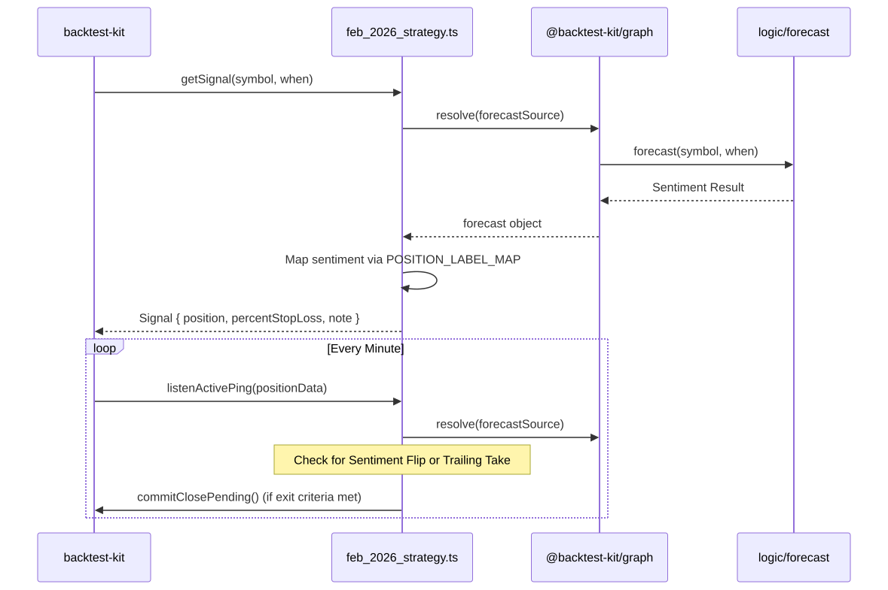

The feb_2026_strategy is a news-driven algorithmic trading strategy designed to capitalize on market sentiment during volatile periods. It utilizes a Large Language Model (LLM) to process real-time news and market data, converting qualitative information into quantitative trade signals. This strategy was specifically backtested against the high-volatility "SaaSpocalypse" and geopolitical shifts of February 2026.
The strategy follows a reactive model where trade entry is dictated by AI-generated forecasts and exits are managed by a combination of fixed risk parameters and sentiment reversals.
forecast engine to categorize news as bullish, bearish, or neutral.long or short positions using a strictly defined label map.Entity Mapping: Signal Flow
The following diagram bridges the natural language concept of "News Sentiment" to the specific code entities that resolve and execute trades.

Signals are generated by resolving a graph-based data dependency. The strategy uses sourceNode to fetch LLM forecasts and outputNode to transform those forecasts into actionable trade directions. A critical component is the NEWS_WINDOW (24 hours), which acts as a cooldown to prevent over-trading on the same news cycle.
For details, see Signal Generation & Sentiment Mapping.
Once a position is opened via Position.moonbag, its lifecycle is monitored by listenActivePing. The strategy employs three primary exit triggers:
For details, see Position Lifecycle & Exit Logic.
The strategy is executed within the feb_2026_frame, a temporal window spanning February 1st to February 28th, 2026. It utilizes the ccxt-exchange module to simulate a Binance-like environment with 1-minute candle precision.
For details, see Backtest Module & Frame Configuration.
In testing, the strategy achieved a +16.99% net PNL with a 2.25 profit factor. It successfully navigated a sustained bear market by maintaining a "Short" bias for 14 out of 16 trades, correctly identifying drivers such as the Kevin Warsh Fed nomination and global tariff announcements.
For details, see February 2026 Case Study & Performance.
The diagram below illustrates how the strategy interacts with the backtest-kit and the logic forecast engine.
